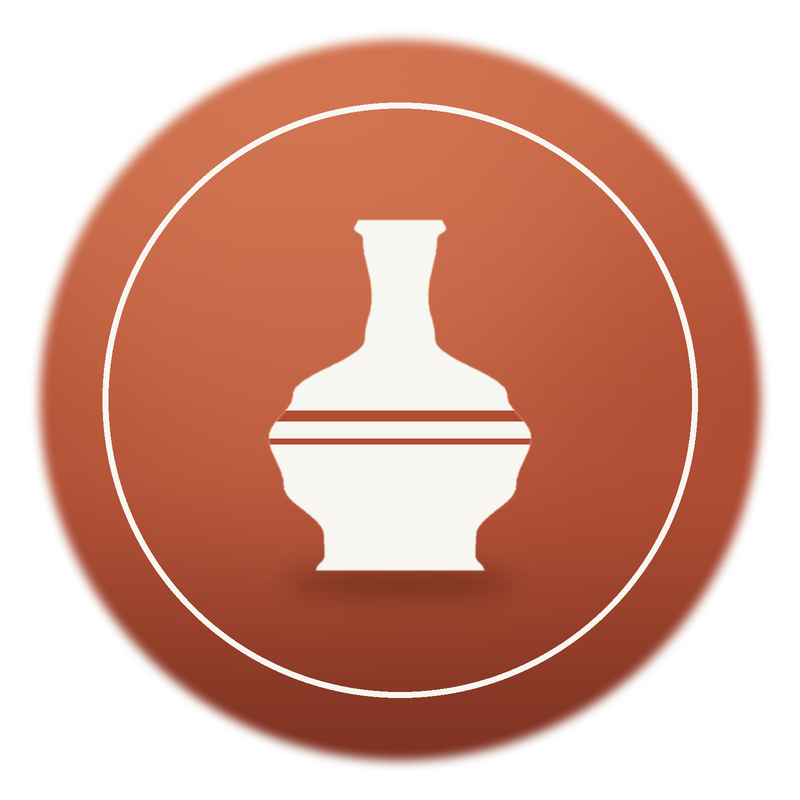
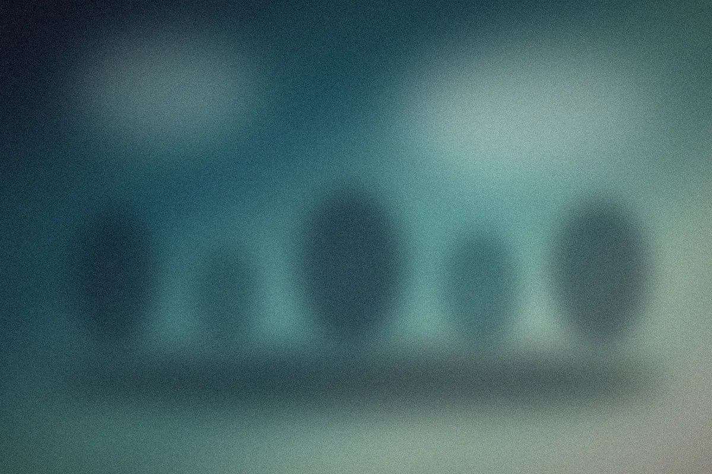
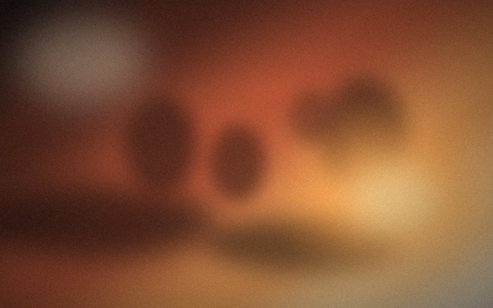

$28/ session
Try the wheel with a teacher beside you.
- Two-hour wheel session
- Clay & tools provided
- Firing billed per piece
- Book any weekday
A studio pitch · Autumn 2026
Hand-thrown pottery for everyday rituals, salt-fired in Maine and signed by the person who made it.


The idea
We make the other kind: one pot, one person, one morning at a time.
Our story
Maya Okafor threw her first hundred mugs on a borrowed wheel in 2019, in a garage that smelled permanently of wet clay. She fired them in a second-hand kiln, gave most away, then sold her first thousand to a café down the road. People kept asking where the cups came from, so we opened the door, added a second wheel, and never quite closed it again.

The timeline
One borrowed wheel and a second-hand kiln.
Word of mouth fills every Saturday class.
We move into a brick mill with room to grow.
Fourteen cafés now serve on our plates.
A founding cohort of forty makers joins.
The craft
What we promise
Our clay comes from a river bank thirty miles from the kiln.
Lead-free, food-safe glazes, tested on every batch.
Dishwasher, oven, microwave. If it chips, we repair it free.
Each piece carries its maker’s mark on the foot.
The firing
Salt goes in at 1,280 °C, and the glaze we get is never quite the same twice.
Kiln No. 2 · Tidewater Mill · 1:40 a.m.
07In their words
Guests ask about the cups before they ask about the coffee.”
Membership
$28/ session
Try the wheel with a teacher beside you.
$185/ month
Your own key, your own shelf, your own pace.
$420/ month
A private wheel and a place in our shop.
Founding cohort · opens Nov 1
Reserve before 30 November and your member rate never goes up.
Reserve a seat → hello@saltkiln.example
Thank you